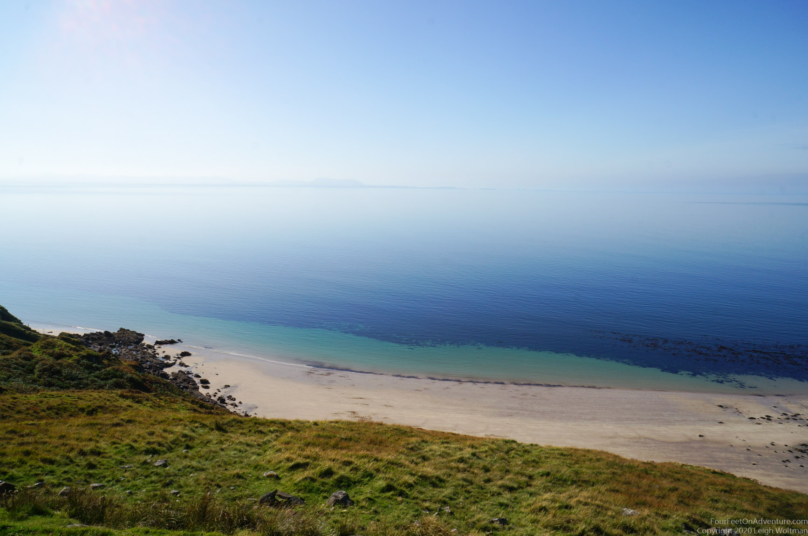
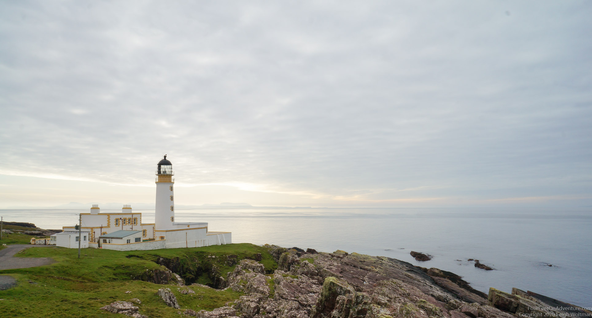
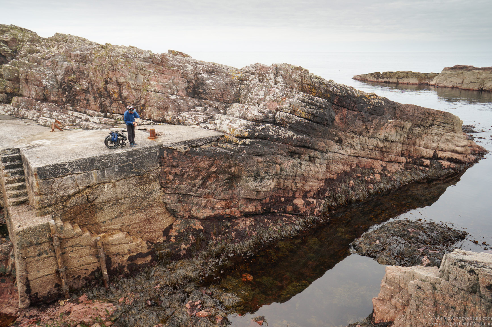
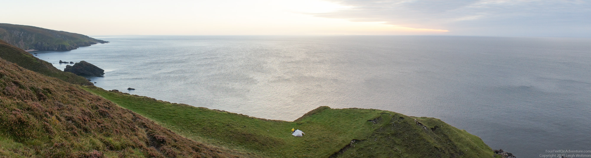
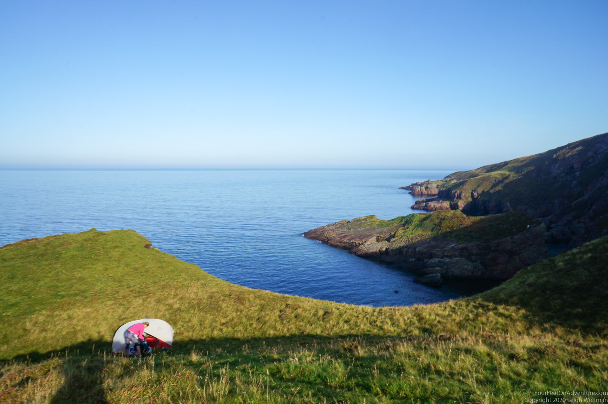

There is always time to check out a lighthouse! Another area we were wanting to spend a little more time in was Gairloch. This is quite close to Torridon (see previous blog) on the West coast of Scotland, and about an hour and a half driva away from our home. Gairloch itself is a pretty little village with a grocery store and some touristy facilities such as a public toilet, a book store, a little cafee and a place that makes home made ice cream. Just a little passed Gairloch is a town called Big Sand, and we thought it might be nice to check out the beach there. It turns out the entire beach can only be accessed through a massive campground, but we found a way to have lunch there and a little foot dip. It was an amazing day with no wind so it was nice and warm.

Next up on the itinerary was Rubha Reidh leighthouse. This is a lighthouse built by the famous lighthouse-building Stevensons family, to be more precise by David Stevenson in 1910. The lighthouse has been operating since 1912 and is now fully automated. The house became a guesthouse, so you can stay there overnight.

The old jetty which was the only way to visity the lighthouse and there was even a ramp for a winch to get goods up the steep slope. Leigh folded up his bike to wait for his passage on the boat, but it appeared he was a couple of decennia too late. A road was build in 1962, and proves to be a mutch easier way to connect the lighthouse with elsewhere.

The road to the lighthouse provides easy access to a rugid coastline that we would otherwise only be able to access by kayak. We spotted a nice dip in a cliff that proved to be great for camping. Ready to enjoy the sunset, see some whales, dolphins and seals (we only saw the seal), and have a good night of sleep.

Waking up in such spots can be so peacefull on a non-windy day. We found it hard to leave. We had a careful walk down to the ocean to collect some plastic, mainly buoys, go for a dip in the ocean to fresh up, and investigate the area. This all was only possible because we just had a cold period that made most of the midges disappear. Had we been here on a non-windy day in the summer, we would have not been able to sit outside the tent to enjoy all this.
